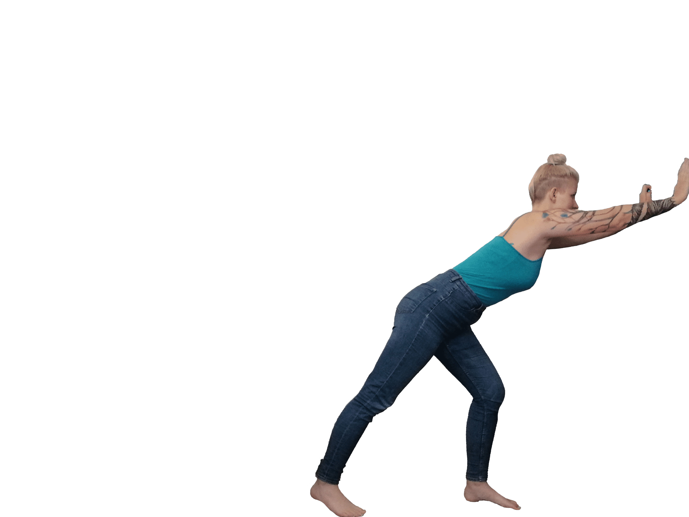

Niečo málo o mne.
Kto vlastne som?
Som človek, ktorý nechce celý svoj život stráviť v škatuli s nálepkou ktorú mu kedysi niekto pridelil. Hoci ma možno poznáte z chodieb FEI STU, v mojej osobnosti sa skrýva oveľa viac ako záujem o môj odbor. Som studnica zlých vtipov, ktoré ak raz začnú tak už neskončia. Som umelecká duša, ktorá sa radšej vyjadrí neverbálne, či už maľbou, poviedkou alebo odevom, prípadne umením, čo nosím na svojom tele ako viditeľné útržky môjho života. Som ešte oveľa viac, ale toto pre dĺžku odseku stačí.
Je heslo, ktorým sa riadim, a pomocou ktorého plávam svetom. V každom je oveľa viacej ako jediná stránka jeho osobnosti. Každý vidí a vníma veci inak, rovnako ako ľudí. Každého priťahuje niečo, odpudzuje zase niečo iné a k niektorím veciam si prechováva neutrálny postoj. Pre každého človeka sme iba vedľajšia postava v jeho príbehu. Pre niekoho môžme znamenať všetko, niekto iný nás môže nenávidieť a niekto ďalší ani nevie, že niekto ako my existuje. Práve preto si nehovorím, čo si asi o mne myslia ostatní. Pretože je pre mňa najdôležitejšie , čo si o sebe myslím ja, a či som najlepšou verziou seba samej.
Pár vtipov pre pobavenie, keď už boli spoemnuté v texte 😁
- Why did the web designer storm out of the restaurant?
She was offended by the table layout. - Why was the class upset that its parent died?
Because it wouldn’t be getting the inheritance! - How do you comfort a JavaScript bug?
You console it. - Why did the web developer send a few extra bucks to his hosting provider?
Because he heard that he should always tip his server. - What does a developer do at the end of a big project?
He gits committed.